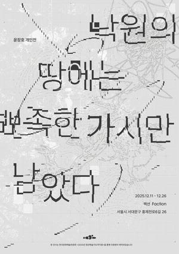

낙원의 땅에는 뾰족한 가시만 남았다
윤장호 개인전
2025.12.11 – 12.26
《낙원의 땅에는 뾰족한 가시만 남았다》는 윤장호 작가가 낙원이라는 관념의 이면을 탐색하는 개인전이다. 유토피아적 이상 뒤에 숨겨진 날카로운 현실의 단면들을 드로잉과 설치를 통해 펼쳐 보인다.
작가는 지도와 텍스트, 건축적 도면의 언어를 차용하여 약속된 땅의 허구성을 해체한다. 가시덤불처럼 얽힌 선들은 이상과 현실 사이의 긴장을 시각화하며, 관객에게 낙원이란 무엇이었는지, 그리고 그것이 남긴 것은 무엇인지를 묻는다.
이 전시는 한국문화예술위원회 시각예술창작산실 전시지원 사업의 일환으로 진행되었다.